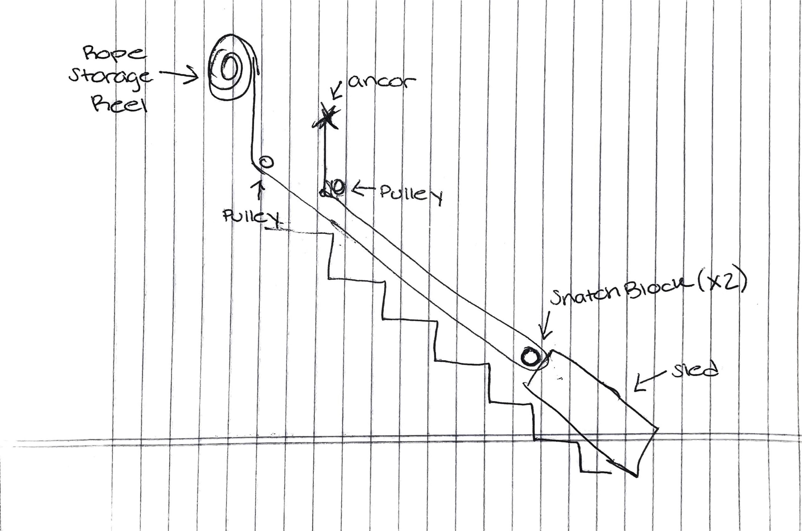
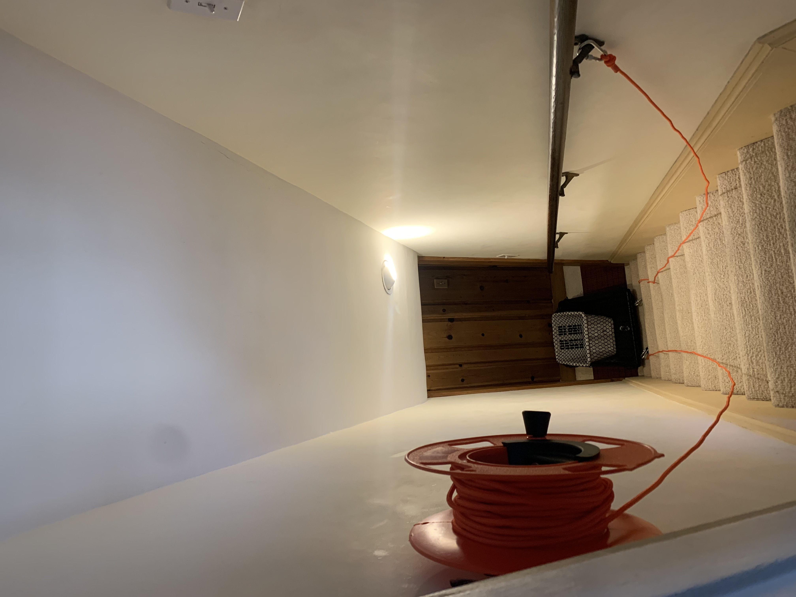
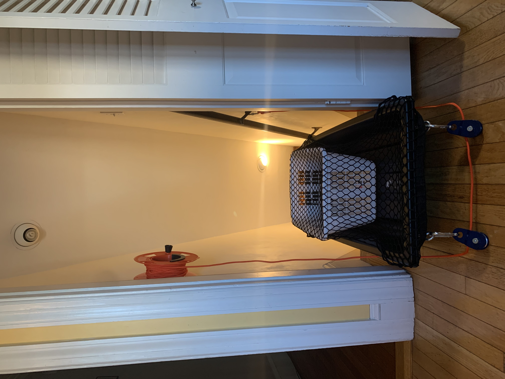

Laundry Ramp
Co-Designer
My co-designers are my grandmother Harriet, who has Alzheimer's disease, and my grandfather, Herb, who is her main caretaker. Their time mostly consists of daily chores like cooking, cleaning, and eating. They both like to read the paper at the kitchen table as they eat, visit family, and make time to take an afternoon nap together every day. Because of Harriet’s Alzheimer’s, she can no longer do most of these tasks by herself, so Herb spends most of his time caring for her. With age, they have both been developing mobility issues, which makes two floor living a bit more difficult. They are not at the point yet where they need full time help, but they do have cleaners and an aid that helps with harder tasks like showering Harriet.

Co-Designer Needs Statement
After my initial discussion with Herb, we decided that whatever product I made needed to support one of his daily chores (cooking, cleaning, pet tortoise care, etc.).
Product Requirements
With the help of my father and my aunt, we expanded the product requirements. It would need to: make one daily chore easier or faster; be easy to use with limited or slower mobility; be intuitive to use (i.e. a single switch, not a complex system); be customized and adapted to fit their current house; be safe to use and interact with (especially with fall risk).
Initial Brainstorming Narrative
My aunt, father, and I decided that safety on the stairs was an area that would be good to focus on. Harriet and Herb have two staircases in their house, one from the basement to the first floor and another from the first floor to the second floor. The staircases are very narrow and steep, both of which increase Herb's risk of falling. In order to mitigate this risk, I decided that I should focus on a product that transports a laundry basket up and down the stairs so that Herb does not have to carry anything when navigating staircases and can focus solely on his walking. Herb and I decided that the basement staircase would be better to install a system into because it is hidden from the rest of the house and will have a longer term effect since they may transition to single floor living in the future.
My first idea when tackling the idea of a laundry transport, was to create a pulley system along the wall or the hand railing that would allow Herb to simply hook a laundry bag onto a carabiner and then either push a button to activate a motor or use a hand crank to get the bag up the stairs. However, this proved to be too complicated when it came to space constraints and safety concerns regarding the tangle potential of having loose cable hanging on the wall.

I then had to pivot quickly, and spent a few hours in the stairwell taking measurements and talking through ideas with my father and Herb. We finally settled on a ramp and a hand winch. The ramp will be hooked flush against the wall when not in use and the winch would be attached to the wall at the top of the stairs. When it is time for Herb to bring his laundry up the stairs, he will unravel the cable on the winch, attach it to the front of the basket, unclip the ramp, and then walk up the stairs alongside the ramp before cranking the winch to pull the basket up.
However, as I thought about this design more, I realized that a cargo sled could serve a similar purpose as the ramp without the complications of installation and potential difficulty in useability for Herb. So, the design I finally landed on involves a pulley system and a sled. Herb would place his laundry basket in the sled, cover it with a cargo net so that nothing falls out of the sled on the stairs, clip the sled onto the pulley system, and wind the cable to move the sled up or down the stairs.
Initial Prototype

 - Lucy.jpg)
Second Prototype
As I was waiting for my final materials to be delivered for the sled and pulley system design, I decided to create an initial prototype to test the feasibility of my idea and to see if there were any areas where I could make the design easier to use for Herb. I found a snow sled in my garage and used cardboard to build up the sides so that the laundry basket would not fall out of the sled when on the incline of the stairs. I then added a rope to the front of the sled to act as a handle and I attached a carabiner to a different rope that I was going to use to pull the sled with so that I could easily hook it onto the sled handle. I was not able to create a pulley system for this iteration, so I decided to pull the rope up with my hands.
Test Plan
I tested the system on my basement stairs to see how easy it was to pull the sled up the stairs without any assistance from a pulley system that would distribute the force and to see how the sled moved up the stairs to make sure that it would not get caught on the notches of each step.


Test Results
After testing, I was able to confirm that the sled moved very smoothly and did not get caught on any individual steps, so I will not have to adapt the sled I purchased in any way to accommodate for the incline.
However, I did decided that I need a pulley system to distribute the weight of the sled because the force of gravity trying to pull the sled back down the stairs was strong enough that I even felt like I was losing my grip at times.
I also determined that it would be necessary to have some sort of reel to store the rope in because as I pulled the sled up, the rope accumulated at my feet, which could create a tripping hazard.
Prototype Conclusions
Around this time, I also went to check out a hand winch that I was looking to buy to act as the base for my pulley and reel system. However, once I got to the store and picked up the box, I realized that the winch was too heavy to mount on a wall. With further research, I knew that any existing system, like winches, were going to be designed for higher tech needs and that I was going to have to adapt a lower tech product to fit my requirements. I landed on using a reel meant for extension cord storage for the winding and storage functions of my rope.
I also knew that I had to adapt my existing design to accommodate for a pulley system that would redistribute the weight and make it easier for Herb to pull the sled up the stairs. Instead of having the rope attached directly to the sled, it will route through two snatch block pulleys that are connected to the sled. The reason for using two snatch blocks instead of one is to accommodate for the fact that the rope reel will be mounted to a side wall and I need to prevent the issues that may arise once the sled nears the top of the stairs and there is an increase in the rope angle. That angle could make it more difficult to pull the rope and could cause the sled to bang into the wall, neither of which would be ideal, so hopefully two snatch blocks will begin to mitigate these issues.
I have yet to determine exactly where I will be mounting the pulleys and the rope reel, but I plan to experiment with different configurations during my next few tests and land on a design set up that will improve Herb’s weekly chore of laundry.

Final Prototype
Bill of Materials
Used:
- Cargo Sled
- Cargo Net
- Laundry Basket
- Cord Storage Reel
- 6mm Rope with Carabiner
- Snatch Block (x2)
- 5/16” Eye Bolt (x2)
- Hex Nut (x4)
- Washer (x4)
- Carabiner (x2)
- 3” Corner Bracket (x2)
- Hollow Wall Anchor (x3)
- 3” x 4” Scrap Block of Wood
- Drill
Wanted to use:
- Single Pulley (x2)
- Eye Screw
- Figure 9 Carabiner
Build Instructions
- Cut a piece of scrap wood to fit within the hole of the rope storage reel (about 3” x 4”)
- Attach the corner brackets to the storage reel and the scrap wood
- Drill three 3/8” holes in the wall at the top of the stairs at about arm height as close to the door frame as possible and insert the hollow wall anchors
- Drill three 3/16” holes that line up with the holes previously drilled in the wall and mount the storage reel on the wall
- Tape down the end of the rope that does not have the carabiner on it to the reel and wind it up
- Attach the two eye bolts to the front of the sled with the nuts and washers
- Guide the rope through the two snatch block pulleys
- Clip the pulleys onto the carabiners and then clip the whole system onto the eye bolts on the sled
- Bring the remaining end of the rope (the side with the carabiner) up the stairs and hook it onto the handrail or onto an eye screw that is attached to the wall
- Place the laundry basket in the sled and cover it with the cargo net
- Turn the reel to pull the sled up the stairs

Test PlanI wanted to test the system before I put too many holes in the wall, so I only attached the rope reel and refrained from using the single pulleys and extra tools for anchoring the rope. After struggling to attach the brackets to the rope reel, I was in a rush to try to get the system on the wall and I should have spent some more time figuring out exactly how I was going to screw the wood block onto the wall because I tried to use drywall anchors when I really needed hollow wall anchors which caused me to put some big holes in the wall that I could have avoided. Eventually I got the reel on the wall, attached the snatch block pulleys to the sled, and hooked the end of the rope onto the railing (instead of the eye screw I intend to use).
Once the whole system was assembled, I decided to only do one test with an empty laundry basket to limit the amount of force on the reel. At this point, I could already tell that the system was not as stable as I would have wanted it to be to really take the weight of the sled and basket, so the goal of the test became a proof of concept and not to test as if this was the final design.
ResultsUnfortunately I was not able to test my design with my grandfather, but I was able to get my father to turn the reel for me. As I expected, the reel began to separate from the wall a bit and needed assistance from a second hand to pull the rope up since the winding motion could not handle the force of the sled. So, I decided to take pictures and videos of the design at this stage and did not finish assembling.


Future Improvements
While testing, I discovered three main areas for improvement: the rope reel, the need for a locking system, and the sled mount and dismount at the top of the stairs.
The rope reel was not designed to handle the force of the sled because it is meant to be used only as a storage system. My initial idea was to use a hand winch, but that was designed to handle weight within the 1,000-2,000lb range and because of that was too heavy to mount on the wall. I would need to find a reel that works within the 25-100lb range, so it could mount on the wall and handle the weight of the laundry and sled.
Ideally, the system would also have a locking mechanism for the rope. This way if my grandfather had to let go of the reel, the sled would not go shooting down the stairs.
A lock could also help with the dismount at the top of the stairs. Since the landing is very small, the sled will have to be brought past the mounting point of the pulleys so that it is flat on the ground. This means that the rope reel will not be able to bring the sled as far up the stairs as is necessary. If the rope locked, my grandfather would be able to let go of the reel and grab the sled. I would also add a handle to the front of the sled, so that my grandfather would not have to bend down to pull the sled the last ten feet.
Scalability
In broadest terms, this product was designed to prevent fall risk. When one has to carry things up the stairs, it prevents them from holding onto the railing for extra support and does not allow them to have a free hand to catch themselves in case of a fall. By creating a product that can carry anything up the stairs, as long as it fits in the 43” x 21” sled, users are able to maintain their independence, continue to live in a multistory home, and navigate the stairs safer. Although this design was specific to my grandparents basement staircase, it could be easily adapted to fit any set of stairs for any person who may need a little more help carrying items or navigating stairwells safely.
Design Process Reflection
If I went through this design process again, I would tell myself that simple can still make an impact. In the beginning, I wanted to create the most innovative design because there was almost nothing on the market to address my issue of transporting items up and down stairs. However, in thinking that my design had to be really advanced, I lost sight of the fact that complexity and success do not always go hand in hand. I did not have the knowledge or resources to tackle a high tech solution, using motors and mounting heavy objects on the wall, which resulted in many of my initial designs being too dangerous and not feasible. Although my final design of a sled and pulley system was still very complex and did not end in a full success, I was able to figure out a way to simplify my initial designs, create something buildable, and learn that my concept was worth seeing through till the end.